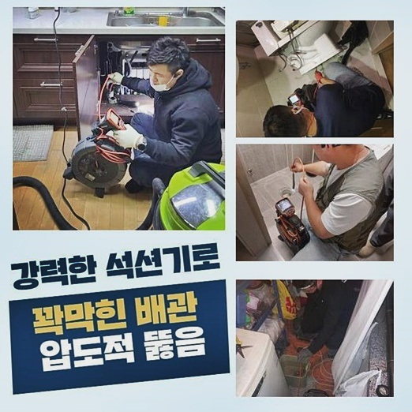
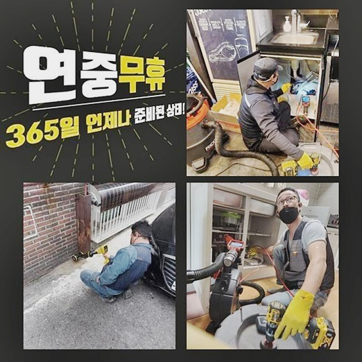
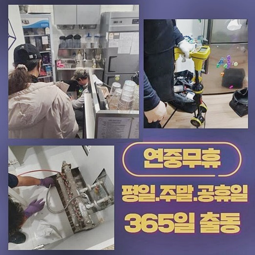
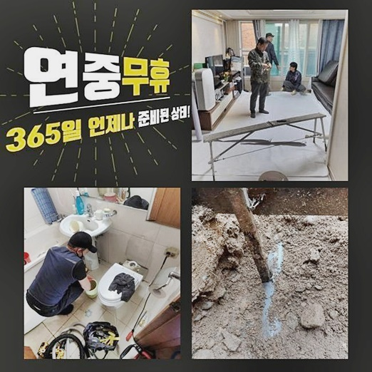
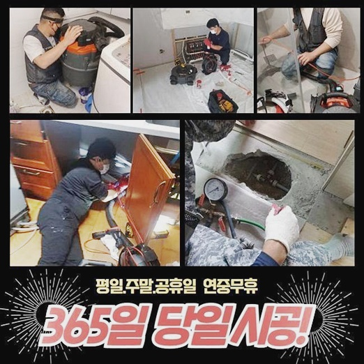
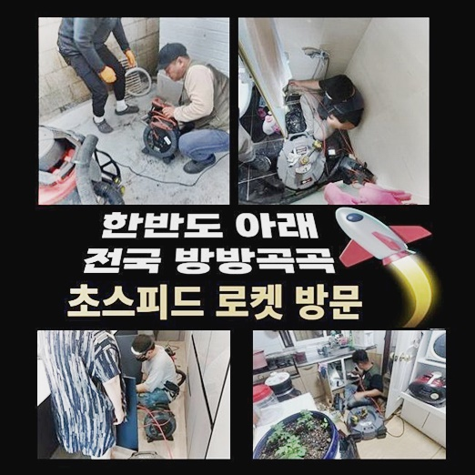

🏠 하단동 신평동 변기막힘 장림동 우수관청소
용인 싱크대막힘 전문 시공 후기

📋 작업 개요
- 위치: 용인
- 서비스 유형: 싱크대막힘, 변기막힘, 하수구막힘, 배관막힘, 역류해결, 뚫는업체, 배관청소, 고압세척, 악취차단
- 작업 일시: 2024. 6. 1. 19:57
- 업체명: 하수구수사대 (010-5615-2118)
🔍 문제 상황
하단동 신평동 변기막힘 장림동 우수관청소
베란다나 욕실 등 물을 상당하게 쓰게 되는 영역이라면 막힘에 관련된 증상도 자주 일어날 수 밖에 없는데 그 사유를 들여다보면 별 생각 없이 내려보낸 노폐물이나 생활쓰레기때문에 생기는 사례가 다수를 차지합니다
이와 같이 뻔하고 명료하게 아는 원인 때문에 생기는 이슈이나 해결에 드는 노력은 유별나게 높다고 볼 수 있겠죠
뚫는 막대나 클리너를 도입해도 문제가 여전한 조건이라면 즉시 베테랑의 하수구 세척을 시도하시는게 필수입니다!
차일피일 조치를 미루시면 세대 내부 막힘에만 끝나는 것이 아니고 바로 아래층 주민에게 수해를 어느정도 입히는 일이 나타나기 때문입니다
하수도막힘으로 의뢰받았던 얼마 전 건물 역시도 절박한 상황이었고 즉각 보완에 들어가야 했습니다
내방드린 후 살펴보니 딱봐도 낡아보이는 곳에다 전화주신 고객분이 스스로 해소하려 시도했지만 딱히 개선은 없었는데요
복합적이지 않은 쉬운 막힘이 도래한 곳이라면 괜찮긴 하겠지만 막힌 하수구를 쉽게 접근하여 오물을 밀어내는 것 자체도 상당히 까다롭습니다
하수구청소에 쓰이는 장비를 활용해서 사유를 꼬집어내고 타겟을 두고 제거하는게 가까운 미래에 유사한 막힘 증세가 빚어지지 않게 차단하는 합리적 대응 수단입니다
하수관의 중단 문제는 부적절한 일상 습관으로 조성되는데 많은 분들이 경시하는 태도로 바라보는 사안이 중첩되어 진짜 오류를 생성하는 거죠
물과 만나면 고체화가 되는 기름기를 그저 하수구에 투척하거나 과일 씨앗이나 파뿌리처럼 거대한 건더기를 심사숙고하지 않고 배수구로 빠트리는 일도 생각보다 많아요

🔎 원인 분석
💡 전문가 진단: 정밀 진단 장비를 사용하여 슬러지의 고착 여부를 판명하고 타격/세척 작업을 실시했습니다.
싱크대 하부장의 주변부를 체크해 봤더니 물이 치솟은 상태였고 불쾌한 악취를 비롯한 상황으로 보였습니다
문제 양상만 봐도 시설물 이용 당시의 실수로 인해 빚어진 트러블이 거의 확실하다는 상식적인 의심을 이어가게 됐는데요
여러 방면의 동향을 알아본 뒤에 제일 1차 단계인 석션기를 단일 사용함으로써 혹시 봉인이 풀리게 되는지 관찰해 보려 했는데요
바로 돌입하긴 곤란했는데 하단부에 설치된 하부장이 석션기계가 유입되기엔 여유공간이 너무 비좁아서 일단 들어내고 시공해야 했어요
불편한 기색없이 알았다 하셔서 분해해서 옆으로 두고 석션기기 기능을 통해 잔수 제거를 임하게 되었습니다
딱히 까다롭진 않았기에 청소를 하는 과정에서 집주인분과 이번 사례에 관계되어 있는 내역과 역사들에 대한 질문을 논의할 수 있었어요
이사 후 짐을 펼치신지도 많이 지나지 않았고 막혀버릴까 늘 주의하는 편이라 일상 속에서 물건을 내버린 일이 있을리 만무하다며 억울함을 호소하셨어요
아마도 앞서 머무르던 분이 마구잡이로 싱크대를 이용하셨을 것 같다고 짐작할 수 있었는데 억울한 것은 맞지만 어쩔 수는 없습니다
무슨 방법을 통하여 설비를 관리해야 나중에 똑같은 막힘 증세가 찾아오지 않을 지에 대해 안내했습니다
작업했던 곳의 모습은 닦아내도 여전히 흥건할 만큼의 오염수가 역류한데다 냄새와 동반하여 물 속에는 해충까지 살고 있었어요
비가 며칠 내리던 때라 축축한 습기가 감싸고 있어서 약간 만 더 나뒀으면 여기저기 곰팡이 포자가 날리는 위기 상황까지 치닫는 일촉즉발의 상황이었죠

🔧 작업 과정
석션기 동원으로는 눈에 띄게 우수한 수준으로 제거되진 않았어요
약간의 잔수랑 흡입하는 장치로 수습이 되는 가장 적은 양이라고 보아도 무방한 수준의 내부 잔해물들만 내보내진 정도였어요
보통은 심각한 정도까지는 아니었다면 석션기계로 처리하더라도 통수가 꽤 확보되건만 이런 약한 흡수과정으로는 해소가 불가능한 형편이라는 점을 감지해 낼 수 있었죠
그 다음으로는 배관용 전용 카메라를 넣어서 어떤 스팟이 오염원의 속성은 뭔지 검토해 보기로 했네요
이와 같은 내시경 기계만 진득하게 집중해 주면 손상된 섹션을 뚜렷하게 평가할 수 있으니 상당히 효율적이라고 엄지를 치켜들 수 있어요
촬영을 해봤으나 해당 작업장은 막힌 단계가 과잉된 상태라서 하수로 통로 자체도 감지되지도 않고 기름슬러지나 여타 오염 물질만 수두룩하게 구조에 차 있는 장면이 촬영됐을 뿐이었습니다
이걸 보니 추가적인 관찰은 어려울 것 같다고 판단 후에 곧장 샤프트 기기를 투입해서 벽체를 스케일링 해 나갔습니다
보고 계시는 샤프트는 흡입 방법을 통해 관로상의 이물을 끌어올리는 과정이 아니고 모터의 구동력으로 도는 헤드의 사슬을 활용하여 긁어내 주는 과정으로 점진적으로 나아가니 탁월한 향상을 볼 수 있어요
약해진 하수구에서 과한 구동으로 타격이 가해진다면 상처같은 일어나지 않았을 문제까지 자연스레 이어질 수 있어서 세밀한 파워와 진동력의 조절을 발휘해야 할 것입니다
배수로의 부식 정도가 높은 축이라 보인다면 이런 문제가 빈번하게 유발되곤 하므로 추가 손상을 염두에 두면서 청소를 진행해야 할 제약이 있습니다
프로세스를 운영하면서 발산되는 기름질을 비롯한 자잘한 파편들이 더 아래로 흘러들어가 막힘의 전이를 일으키는 일이 발생치 않도록 습식 청소기의 구동도 제대로 수행해야 합니다
다시 수돗물을 틀어서 통수 검사를 마무리로 수행했더니 더이상은 동일한 물이 느릿하게 흘러가는 모습이 싹 사라진걸 알아차릴 수 있었네요
싱크대에 쌓인 물 배수가 척척 되는 것을 체험하신 고객님도 고민이 많던 막힘을 제대로 해결해 줬다며 손뼉을 치셨네요
초기가 아니라 꽤 진행된 막힘 조건이라면 좀 더 빠르게 배관 클리닝 전문공에게 연락을 취해주셨다면 좋았을 것은 사실이었지만 중기 정도에서 처리를 요청해주신 점은 신의 한수였다고 생각이 들었어요
하수구청소 이후의 컨디션이 좋았던 덕에 베란다 막힘도 추가로 요구를 해주셨습니다
계약 전에 논의된 내용은 아니었지만 다음 현장까지는 시간이 뜨는 상태인데다 해결하기 위한 난도도 평이한 수준이라서 이어서 바로 업무했어요
어두운 관로를 탐색하는 촬영노즐을 베란다 배관에 넣어 배수구의 건강과 상황을 접수해 가며 고심하여 장비를 골랐어요


✅ 작업 완료
회전력이 좋은 샤프트를 넣어 표적으로 처리하니 상쾌한 하수의 이동이 지체 없이 나타났네요!
베란다 쪽에 썩은 악취가 심각해서다행히 걸림돌이 전혀 없이 정체된 사항이 뚫려서 큰 보람을 느꼈습니다
이러한 베란다는 물론 물이 흐르는 배관에 대한 적임자는 저희 모든 막힘을 처리하는 업체가 가장 적합하답니다
막힘현상을 스스로 개선될 낌새가 없다면 숙련된 기술자인 저희에게 연락해 주신다면 반드시 기대하셨던 그 이상의 개선을 얻어보실 것입니다
의뢰받으면 바로 시동을 걸고 최선의 결과로 깔끔한 배관환경을 구축하는 담당자라는 사실을 거듭 전달드리며 시공 사례 소개를 끝낼게요




⚠️ 주방 싱크대 배관 막힘 예방 수칙
- ✅ 기름기가 묻은 식기나 프라이팬은 설거지 전 키친타올로 반드시 기름때를 닦아내세요.
- ✅ 주기적으로 싱크대 개수대에 뜨거운 물을 가득 받아 한 번에 내려 배관 내부 기름을 씻어내세요.
- ✅ 배수구 거름망을 미세한 필터로 사용하시고 음식물 찌꺼기가 틈으로 새어 들지 않게 관리하세요.
- ✅ 베이킹소다와 식초를 뜨거운 물과 함께 일주일에 한 번씩 부어주면 배관 살균과 막힘 예방에 좋습니다.
💡 핵심 정리
- 확실한 장비 작업(내시경 점검 및 샤프트 스케일링)으로 원인을 뿌리 뽑습니다.
- 작업 후 1년 이내에 동일한 부위 재발 시 100% 무상 A/S 서비스를 보장합니다.
- 서울 · 경기 · 인천 전 지역에 24시간 언제든 긴급 출동할 수 있도록 항시 대기 중입니다.
❓ 자주 묻는 질문 (FAQ)
🚨 용인 싱크대막힘 문제로 고민이신가요?
정확한 원인 진단과 확실한 시공으로 재발 없는 해결을 약속드립니다.
24시간 긴급 출동 | 서울 · 경기 · 인천 전지역 | 1년 내 재발 시 무상 A/S